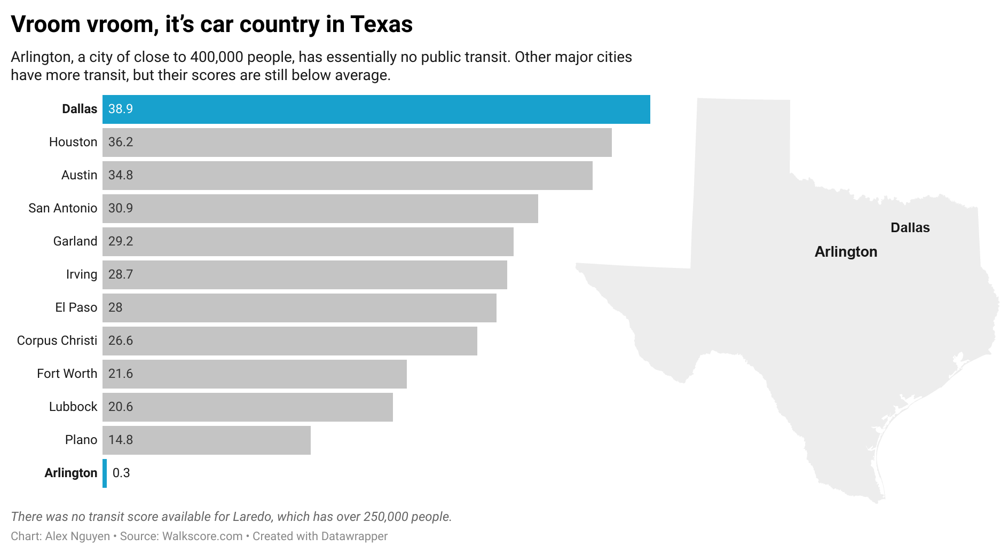

Do I want to live here?
By Alex Nguyen
As a person who can't drive, a major thing I need to research when moving to a new city is how good is its transit system. This is especially because my favorite thing to do in the world is walking around with a little cold drink. As a result of that, I wanted to see how cities in the US stack up in terms of their walk and transit scores.
Pulling data from walkscore.com, I looked at 108 American cities with at least 200,000 people. New York tops the list as the most transit-friendly American city. Meanwhile, the vast majority of the remaining big American cities — especially those in the South and Southwest — looks pretty bleak for a non-driver. This is of course an unsurprising fact, but it’s still jarring to see the data.

How bleak you may ask? The average walk score for the 108 US cities is 47.8, which means 66 cities are below average. Meanwhile, the average transit score for them is 35.98, which means 63 cities are below average. And for someone who likes to both walk and take public transit, the worst of the worst cities to live in are Chesapeake, VA; Jacksonville, FL; Montgomery, AL and Charlotte, NC.

The most notable datapoint, however, is Arlington, TX. There is no mass public transit in this city of almost 400,000 people, earning it a score of 0.3. It also has a below average walk score of 38.1.
But while Arlington is an extreme outlier, it is also reflective of the car country that is Texas. All 13 of the state’s featured cities have below average walk score. Meanwhile, Dallas and Houston — its two largest cities — barely passed the average mark for transit score. And after living in the state recently for almost a year, I was indeed very sad as a non-driver.
The website also includes data on 22 Canadian cities with at least 200,000 people. Perhaps it's because I grew up in Vancouver — the city with tops the country for walk score — but I was surprised to find out that the average walk score for the featured US cities is actually slightly higher than that of the featured Canadian cities at 47.8 and 47.6 respectively. On the other hand, the average transit score for the US lags far behind Canada's at 36 and 51.8 respectively.
Check out my work for this story.